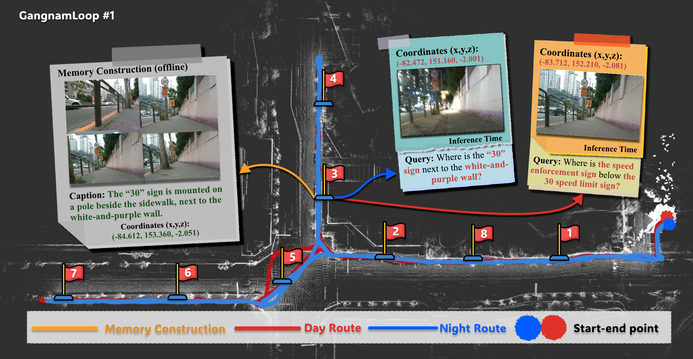
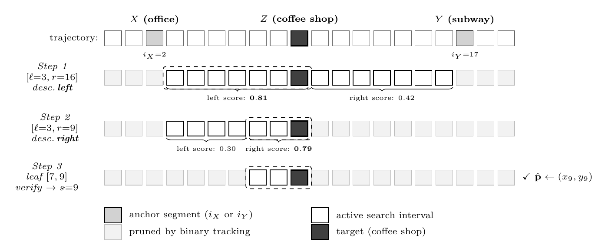
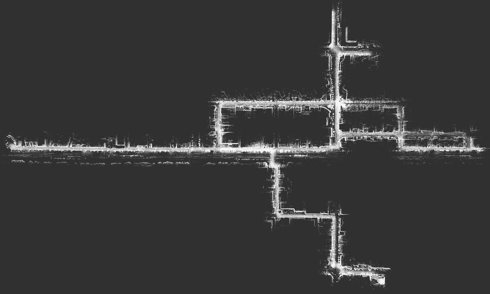

Open-source spatial QA · service robots
A fully open-source agent that localizes a queried place by binary-searching the robot's own trajectory — running entirely onboard, with no closed-source API.

Abstract
Spatial question answering lets a service robot turn a query such as “where can I find a dry cleaner on the way back home?” into a metric coordinate that navigation can act on. Prior approaches rely on retrieval-augmented agents built on closed-source models such as GPT-4o, but robots in the real world often cannot depend on online closed-source models due to network instability, communication latency, and deployment cost.
We present BinTrack, a simple yet effective, fully open-source spatial-localization agent that exploits the temporal ordering of a robot's trajectory: it performs a binary search over the segments between two anchor landmarks identified from the query. BinTrack improves overall accuracy by up to 22.8% over open-source implementations and matches the reported closed-source result on the global category of SpaceLocQA, while running more than 1.5× faster. Every component is open-source, so the full pipeline is reproducible without any API access. We also release GangnamLoop, a multi-trip outdoor benchmark recorded by a quadruped robot on public streets, revisiting the same locations under different conditions and pairing the robot's low viewpoint with the human owner's.
How it works
BinTrack reads the route as a temporally ordered list of segments and localizes a place through a small set of components built around a single search primitive.

A segment can be captioned three ways — full, center, detail — so retrieval can match the right view of a place.
A VL-guided binary search over the segments between X and Y, halving the interval until it brackets the target.
The planning agent is a text-only 32B model and the verifier is a separate 7B vision-language model; keeping the two roles apart avoids the vote-count hallucination of a single combined model.
Results
Under a fair open-source evaluation, BinTrack beats every open-source baseline across all categories, and ties the closed-source Meta-Memory on the hardest setting.
| Method | Backbone | Basic | Local | Global | Overall |
|---|---|---|---|---|---|
| Meta-Memory | closed-source | 67.8 | 61.8 | 62.2 | 63.9 |
| Meta-Memory | open-source | 50.0 | 51.1 | 32.6 | 44.6 |
| ReMEmbR | closed-source | 58.5 | 57.8 | 46.3 | 54.2 |
| ReMEmbR | open-source | 56.7 | 61.1 | 32.6 | 50.1 |
| BinTrack (ours) | open-source | 74.4 | 65.6 | 62.2 | 67.4 |
Using only open-source models, BinTrack reaches the closed-source Meta-Memory's global score (62.2) and the best overall accuracy.
| Method | R1 | R2 | R3 | R4 | R5 | R6 | R7 | R8 | Overall |
|---|---|---|---|---|---|---|---|---|---|
| Meta-Memory (open) | 15.6 | 31.1 | 0.0 | 6.7 | 20.0 | 8.9 | 26.7 | 15.6 | 15.6 |
| ReMEmbR (open) | 24.4 | 33.3 | 4.4 | 8.9 | 24.4 | 11.1 | 31.1 | 6.7 | 18.0 |
| BinTrack (ours) | 55.6 | 60.0 | 24.4 | 40.0 | 60.0 | 31.1 | 57.8 | 33.3 | 45.3 |
Environment
Every role is filled by an open-source model, so the pipeline needs no external API.
| Role | Model |
|---|---|
| Captioner (memory build) | Qwen2.5-VL-7B-Instruct |
| Verifier (4-view ensemble) | Qwen2.5-VL-7B-Instruct (shared) |
| Planning agent | Qwen2.5-32B-Instruct-AWQ |
| Text encoder | mxbai-embed-large-v1 |
| Vector database | Milvus (Lite) |
# Python 3.10 (conda recommended) conda create -n vln python=3.10 -y conda activate vln # Pinned versions verified for Qwen2.5-VL pip install torch==2.4.1 # CUDA 12.x build pip install transformers==4.49.0 # newer releases break on torch.library.custom_op pip install accelerate==1.0.1 "tokenizers>=0.21,<0.22" "setuptools<81" pip install pymilvus sentence-transformers qwen-vl-utils autoawq pandas numpy
Benchmark
A quadruped robot walks four out-and-back routes through Gangnam, Seoul, then walks each one again under the opposite lighting. Day (red) and night (blue) trajectories are aligned on a shared SLAM map.

| Recordings | Queries | Day/night pairs | Viewpoints | Total recording | RGB frames |
|---|---|---|---|---|---|
| 8 | 360 | 4 | 2 (robot + owner) | 221 min | 383,800 |
| # | Day | Condition | Round trip | Pair | Duration | RGB frames | Queries |
|---|---|---|---|---|---|---|---|
| 1 | Day 1 | day | E → A → E | #8 | 14:43 | 25,545 | 45 |
| 2 | Day 1 | day | E → B → E | #7 | 12:37 | 22,020 | 45 |
| 3 | Day 1 | night | E → C → E | #6 | 32:47 | 56,883 | 45 |
| 4 | Day 1 | night | E → D → E | #5 | 45:12 | 78,507 | 45 |
| 5 | Day 2 | day | E → D → E | #4 | 49:40 | 86,208 | 45 |
| 6 | Day 2 | day | E → C → E | #3 | 35:19 | 61,397 | 45 |
| 7 | Day 2 | night | E → B → E | #2 | 13:41 | 23,753 | 45 |
| 8 | Day 2 | night | E → A → E | #1 | 17:03 | 29,487 | 45 |
Recordings (1,8) (2,7) (3,6) (4,5) share a destination but differ in time of day, forming the day/night cross-domain evaluation set.
On the robot
We are bringing BinTrack onboard our service-robot platform. Recorded runs, on-device latency, and a deployment guide will be added here.
Query to coordinate to navigation, recorded on the robot.
Per-query timing of retrieval, search, and verification on the robot.
The steps to run BinTrack onboard a quadruped robot.
Data
GangnamLoop will be released on Hugging Face. It contains 8 round-trip recordings (360 queries) over four routes, each recorded once during the day and once at night, with paired robot and human viewpoints.
A link will appear here once the dataset is published.
Cite
If this work is useful for your research, please cite our paper.
@article{na2026bintrack,
title = {Binary Tracking for Spatial QA and Navigation with Open Vision-Language Models},
author = {Na, Dongbin and Kim, Chanwoo and Rho, Soonbin and Choi, Giyun and Lee, Gangbok and Hong, Dooyoung},
year = {2026}
}